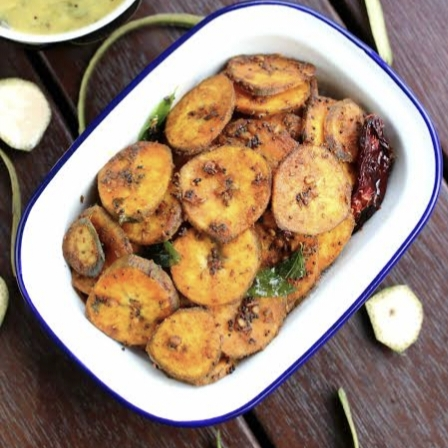

2 raw bananas (peeled & sliced into thin rounds or small pieces)
2 tbsp oil
½ tsp mustard seeds (optional)
½ tsp turmeric powder
1 tsp red chili powder (adjust to taste)
½ tsp cumin powder (optional)
Salt to taste
1 tbsp gram flour (besan) or rice flour (optional, for crispiness)
Curry leaves or coriander leaves (for garnish, optional)

Instructions:
Peel and slice raw bananas, then soak them in salt water for 5 minutes to prevent discoloration. Drain and pat dry.
2. Heat oil in a pan on medium heat. Add mustard seeds (if using) and let them splutter.
Add banana slices and stir well. Cook for 5 minutes, stirring occasionally
Add turmeric, chili powder, cumin powder, salt, and besan/rice flour. Mix well to coat the banana slices evenly.
5. Cook on low-medium heat for 10-12 minutes, stirring occasionally, until they turn golden and crispy. Garnish with curry leaves or coriander.
కావలసినవిః
2 పచ్చి అరటిపండ్లు (ఒలిచిన & సన్నగా గుండ్రంగా లేదా చిన్న ముక్కలుగా చేసి)
2 టేబుల్ స్పూన్లు నూనె
½ స్పూన్ ఆవాలు
½ స్పూన్ పసుపు పొడి
1 స్పూన్ ఎర్ర మిరప పొడి
½ స్పూన్ జీలకర్ర పొడి
రుచికి ఉప్పు
1 టేబుల్ స్పూన్ గ్బియ్యప్పిండి (పెళుసుదనం కోసం)
వేపాకు లేదా కొత్తిమీర ఆకులు
పచ్చి అరటిపండ్లను పై తొక్క తీసి ముక్కలుగా చేసి, రంగు మారకుండా ఉండేందుకు ఉప్పు నీటిలో 5 నిమిషాలు నానబెట్టండి. హరించడం మరియు పొడిగా ఉంచండి
మీడియం వేడి మీద పాన్ లో నూనె వేడి చేయండి. ఆవాలు వేసి (ఉపయోగిస్తే) మరియు వాటిని చిందరవందరగా ఉంచండి
అరటిపండు ముక్కలను వేసి బాగా కలపాలి. అప్పుడప్పుడు కదిలించు, 5 నిమిషాలు ఉడికించాలి.
పసుపు, కారం పొడి, జీలకర్ర పొడి, ఉప్పు మరియు బీసన్/బియ్యం పిండిని జోడించండి. అరటిపండు ముక్కలను సమానంగా కోట్ చేయడానికి బాగా కలపండి.
10-12 నిమిషాలు తక్కువ-మీడియం వేడి మీద ఉడికించాలి, అప్పుడప్పుడు కదిలించు, అవి బంగారు రంగు మరియు క్రిస్పీగా మారుతాయి. కరివేపాకు లేదా కొత్తిమీరతో అలంకరించండి